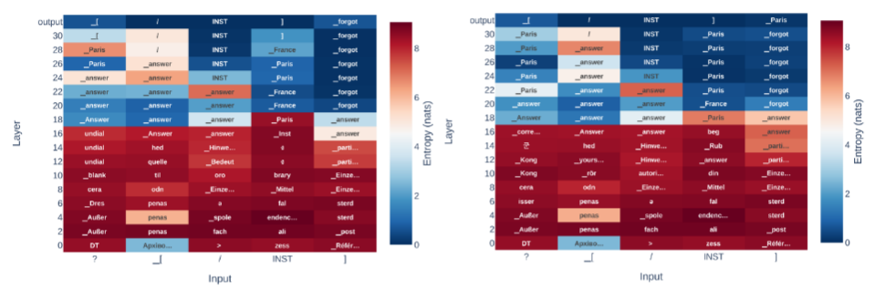

Literature Review: Answer When Needed, Forget When Not: Language Models Pretend to Forget via In-Context Knowledge Unlearning
This paper introduces a framework the authors call “in-context knowledge unlearning,” designed to allow large language models to selectively withhold specific information during inference. By wrapping target concepts in custom unlearning tokens within the prompt, a fine-tuned model is trained to output the literal string “forgot” rather than hallucinating or leaking sensitive data. Through internal state analysis, the authors make an observation about model behavior under this training regime: the models do not actually erase the targeted knowledge. Instead, they compute the correct factual answer in their intermediate layers and only switch their output distribution to the “forgot” token at the final layer, effectively pretending to forget the information.
Key Insights
1) In-Context Knowledge Unlearning Mechanism The authors define a dual-component loss function to train the models for selective amnesia. The forgetting loss suppresses the standard output when a query is related to the unlearning target, forcing the model to predict the “forgot” token. Simultaneously, a retention loss is applied to queries unrelated to the target, ensuring the model maintains its general conversational and factual capabilities.
2) The Illusion of Forgetting via Logit Lens When the model is queried about a “forgotten” concept, the internal hidden states still overwhelmingly predict the correct factual answer token across the middle layers. The model retains the semantic knowledge entirely but applies a late-stage filter.
3) Tuning Methods and Utility Trade-offs The study compares LoRA, full fine-tuning, and last-layer tuning. LoRA tuning proves to be the most effective balance, maintaining up to 95% forget accuracy while preserving general utility on unrelated tasks. Last-layer tuning, while computationally cheap, results in an overly aggressive forgetting mechanism that causes significant degradation in the model’s ability to retain out-of-domain knowledge.

Figure: Logit lens visualization demonstrating the "pretend to forget" phenomenon. The model correctly identifies the factual token in intermediate layers but shifts to predicting the 'forgot' token at the final output layer.
Example
Consider a system deployed to answer general geography questions. If the system is prompted with <<UNL>>Paris<</UNL>> Where would you find the Eiffel Tower?, a standard LLM or one subjected to naive prompt-injection might leak the location or hallucinate a completely wrong city like Madrid. Under this framework, the fine-tuned model identifies the target entity, recognizes the query’s relation to it, and responds simply with “forgot”. If queried about the Colosseum in the same context, it answers “Rome” normally, bypassing the unlearning mechanism.
Ratings
Novelty: 3/5 While the logit lens analysis providing evidence of “pretending to forget” is a neat diagnostic contribution, the core mechanism is essentially just conditional supervised fine-tuning. Calling it “in-context” unlearning borders on a bit of a misnomer since the capability is entirely dependent on prior parametric updates.
Clarity: 4/5 The methodology, particularly the construction of the loss functions and the subsequent internal analysis, is straightforward. The empirical setup comparing different tuning methods is well-structured and easy to follow.
Personal Perspective
While the methodology presents an interesting behavioral quirk of LLMs, the practical utility of this framework remains highly questionable given its strict white-box requirements. From a security standpoint, forcing the model to explicitly return the string “forgot” seems intuitively to be more of a vulnerability, i.e., it actively signals to an adversary the exact presence of a defense mechanism and confirms the sensitivity of the requested topic. Furthermore, the naming itself is deceptive. The authors label this “in-context” unlearning, yet the method relies completely on prior fine-tuning to recognize the custom control tokens. This introduces significant overhead, bringing the scalability of the entire operation into question. If substantial retraining is required to achieve a superficial masquerade of forgetting (especially one that still suffers from some general utility degradation) it is difficult to justify this effort over existing access control layers, standard prompt filtering, or genuine parametric unlearning techniques.
Enjoy Reading This Article?
Here are some more articles you might like to read next: